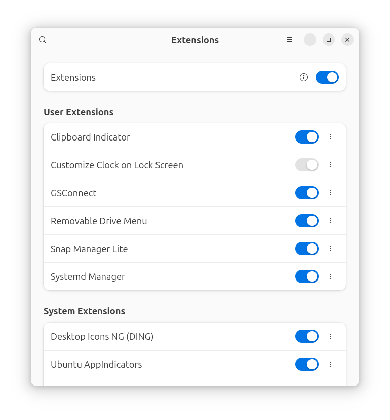
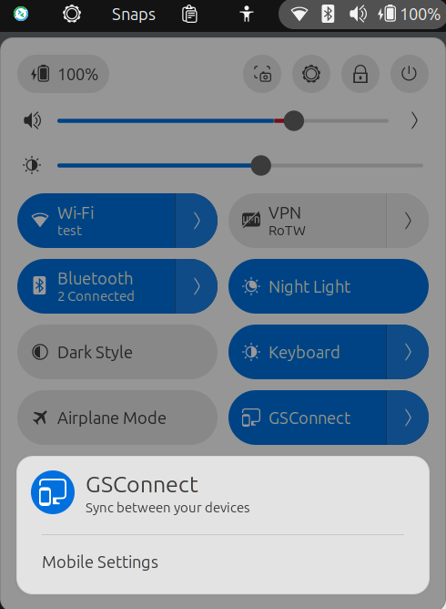
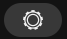
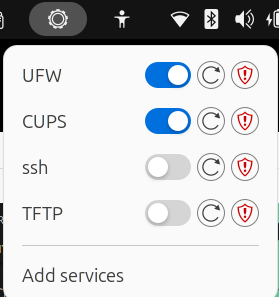
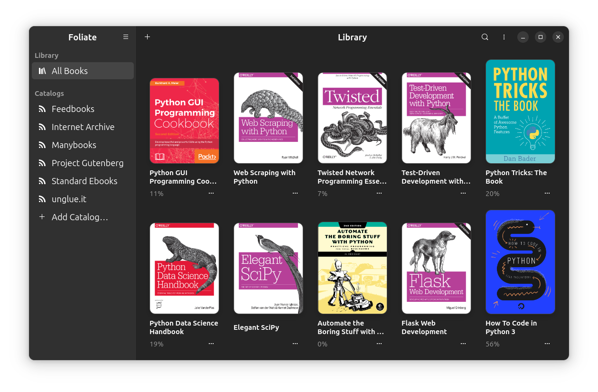
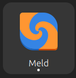

Gnome Desktop Tools
 KEY TAKEAWAYS
KEY TAKEAWAYS
- Ubuntu is built off of Debian Linux, so tools that are compatible with Debian will probably work on Ubuntu.
- Ubuntu comes with the The App Center built in. Thousands of applications are available. To open - Tap
Superkey, typeApp, pressEnter. - Ubuntu supports the Gnome Project's Flat Pack applications.
- Ubuntu supports App Images. Linux apps that run anywhere!
- If you are coming from MacOS, you can use Homebrew to install packages.
- Thousands of networking tools are available on github
- The Packet Pushers network maintains a list of Open Source Networking Projects. Most work on Ubuntu.
Introduction
About GNOME on Ubuntu
Ubuntu Desktop comes installed with a slightly modified version of the GNOME Desktop Environment. Here is a list of the notable differences between GNOME on Ubuntu and "Vanilla" GNOME.
- Ubuntu comes with Firefox instead of the GNOME Web browser.
- Ubuntu comes with the Remmina remote desktop client instead of GNOME Connections.
- The AppIndicators extension is included. This extension will enable icons in the top right corner of some applications.
- The Ubuntu Dock extension is included. This extension provides the left sidebar for running applications.
- The Desktop Icons NG extension is included. This extension enables the use of icons on the desktop.
- In addition to Ubuntu desktop wallpapers, the default theme is Yaru and the default font is Ubuntu.
- Minimize and maximize buttons are included on window title bars.
Gnome News
The Gnome project maintains a site called This Week in Gnome where they post links to short articles on what changed in the current week. I don't remember to look at it every week, but it's worth going to once in a while to see what has changed.
Getting Help
You can tap the superkey and type help to open Ubuntu's Desktop Guide. If you are new to Ubuntu, I highly recommend that you review it.
Terminal based Package managers
On linux, Applications are commonly referred to as packages. For years Linux distributions have used a Package Manager to install applications. The problem with package managers is that Debian/Ubuntu used a different package manager than Redhat/Centos, which used a different package manager than Arch, which used a different package manager than SUSE. And on and on. This meant any developer who wanted to create Linux applications had to create packages for every manager. That was not popular with developers and held Desktop Linux adoption back.
This chapter will be about Graphical tools but I need to explain two terminal package managers first because they are needed to update the system after the installation of Ubuntu finishes.
Advanced Package Tool - The Ubuntu package manager
The Advanced Package Tool (apt) is the default terminal based package manager for Debian based Linux distributions like Ubuntu.
The Nala Package manager
Description from the nala webpage: Nala is a front-end for libapt-pkg, the library that uses the python-apt api. Especially for newer users it can be hard to understand what apt is trying to do when installing or upgrading. We aim to solve this by not showing some redundant messages, formatting the packages better, and using color to show specifically what will happen with a package during install, removal, or an upgrade.
Benefits of Nala over Apt
Nala offers a more user-friendly interface with features like parallel downloads, improved output formatting, and package transaction history, making it easier to manage software
Parallel Downloads
Outside of pretty formatting, the number 1 reason to use Nala over apt is parallel downloads. By default, Nala will download 3 packages per unique mirror in your sources.list file. Opening multiple connections to the same mirror is great for speeding up downloading many small packages. We have the 3 connections per mirror limit to minimize how hard we are hitting mirrors. Additionally, we alternate downloads between the available mirrors to improve download speeds even further. If a mirror fails for whatever reason, we just try the next until all defined mirrors are exhausted.
Note: Nala does not use APT for package downloading and verification
Fetch
sudo nala fetch
Which brings us to the next standout feature, nala fetch. Nala fetch will check if your distribution is either Debian or Ubuntu. Nala will then go get all the mirrors from the respective master list. Once done we test the latency and score each mirror. Nala will choose the fastest 3 mirrors (configurable) and write them to a file.
Note
At the moment fetch will only work on Debian, Ubuntu and derivatives still tied to the main repos.
History
nala history
The last big feature is the nala history command.
Nala stores each Install, Remove or Upgrade in /var/lib/nala/history.json with a unique <ID> number. At any time you can call nala history to print a summary of every transaction ever made. You can then further manipulate this with commands such as nala history undo <ID> or nala history redo <ID>.
If there is something in the history file that you don't want, you can use the nala history clear <ID> to remove that entry.
Alternatively for the clear command we accept --all which will remove the entire history - sudo nala history clear --all.
Installation
References
Nala apt Frontend for Linux - An article from PhoenixNAP on Nala.
Universal Linux Package Managers
To work around this problem three universal packaging systems were created:
- Snaps
- Flatpaks
- AppImages
It's the old "Pick a standard, any standard" joke. We now have a package installer format that works on all platforms, but there are three of them üòÅ. This article explains the who, and how of the three - Flatpak vs. Snap vs. AppImage.
Snaps vs Flatpak vs Appimage
Snaps
Canonical, the publisher of Ubuntu, developed the Snap infrastructure so it's built into Ubuntu. It runs on a proprietary backend hosted by Canonical. This has caused an uproar in the Linux community that values Open Source over everything. My opinion is that I use Ubuntu, snaps are native to Ubuntu and the Ubuntu security team does a good job in general so I use snaps when I find a useful application packaged as a snap.
Flatpaks
Gnome, KDE and FreeDesktop created the Flatpak organization in September 2015. This is before Ubuntu switched to the Gnome desktop in October 2017.
Note
It was announced in December 2024 that Flatpak will become a standalone organization! I hope that this will increase developer interest in Flatpak.
Appimages
AppImage is an open source community project not affiliated with Canonical or The Gnome project. The Appimage webpage describes them as Linux apps that run anywhere and Linus Torvalds, Linux Creator says This is just very cool. Oddly enough, in the Flatpak section below, I will show a flatpak called Gear lever that was developed to make managing appimages easy!
Tip
Appimages on Ubuntu after 23.04 require installing the FUSE 2 library using sudo apt install libfuse2t64. Please read this article: Appimages on Ubuntu >22.04
When I wrote this in July 2025, the Appimage Hub had 1522 applications listed!
Flatpak
The Gnome project created dedicated applications for managing the Gnome desktop. I like the ones listed below, especially for users coming to Ubuntu from Windows. Gnome Resources and Disk Analyzer are similar to the Windows applications for managing resources and disk usage. You can use terminal tools like htop and du for viewing resources and disk usage but when you first start using Ubuntu the GUI tools will be more comfortable.
We will cover terminal tools later. In this section we will learn how to install graphical tools using Flatpaks.
I am going to start with flatpak applications instead of the Ubuntu App Store because there are some Gnome project developed flatpak applications that are useful for managing the system.
Visit the Flatpak store by clicking this link: Flathub. There are thousands of applications that you can browse and install. Most are free open source software (FOSS). Some will have a Donate button. If you install the application and find it useful, please go back and donate. Most of the developers don't get paid for their time.
Install Flatpak
I am going to be using the Nala package manager in the instructions. If you haven't installed Nala yet, substitute apt for nala. Open a terminal (ctrl+alt+t) and run the following commands:
sudo nala update
sudo nala install flatpak
flatpak remote-add --if-not-exists flathub https://dl.flathub.org/repo/flathub.flatpakrepo
Explanation
- sudo nala update - This uses the
Nalapackage manager to update the repositories that your machine uses. - sudo nala install flatpak - This uses the
Nalapackage manager to actually install flatpak. - flatpak remote-add - This uses the
Aptitudepackage manager to add the remote flatpak repository. This allows the flatpaks to receive updates.
Warning
Unfortunately you do have to restart after running the commands. There is no "Reboot Now" message but flatpak will not be available until you reboot.
Once your system restarts we are going to install a few flatpak applications for managing the system and making life better!.
Gnome Specific
The Gnome project maintains a site that contains Flatpak applications designed specifically to enhance the functionality of the Gnome desktop. Apps featured in this curated overview are all built with the GNOME philosophy in mind.
They are easy to understand, simple to use, feature a consistent and polished design and provide a noticeable attention to details. Naturally, they are free software and have committed to being part of a welcoming and friendly community. These apps will perfectly integrate with your GNOME Desktop.
Gnome Core Apps
Several of the the 28 Core Apps are installed in Ubuntu by default and are worth looking at. Here are descriptions of five that I find useful in day to day work.
The Characters application contains smiley faces, symbols, math characters, etc. that you can insert into documents. To open, tap the Super key, type characters and press enter.
The Fonts application lists every font available on your system. For coding, I installed Fira Code and I can view the six different faces of Fira Code using the Fonts application. To open, tap the Super key, type fonts and press enter.
The Clocks application is useful if you work with teams in different time zones. You can add clocks from any time zone in the world. Also included are an Alarm, Stopwatch, amd Timer. It's very similar to the clocks app on Apple IOS. To open, tap the Super key, type clocks and press enter.
The System Monitor application is similar to the Gnome Resources application but not as comprehensive. It's worth looking at. Below is a screenshot of the System Monitor application. To open, tap the Super key, type system monitor and press enter.
The Logs application allows you to quickly look at system logs. It's a super fast way to look for issues. If the log has a URL for support, it will be shown.
Gnome Circle Apps
GNOME Circle champions the great software that is available for the GNOME platform. Not only do we showcase the best apps and libraries for GNOME, but we also support independent developers who are using GNOME technologies. GNOME Circle contains applications extending the GNOME ecosystem. It champions the great additional software that is available for the GNOME platform. Learn more about GNOME Circle.
One Circle application that I think is mandatory is Impression, an application to write ISO images to a flash drive! Start Impression, pick the image, select the USB flash drive, click write.
In the screenshot below, I picked the the Windows 11 image from my ~/Downloads directory and selected the Aruba flash drive to write it to. All that is left is to click on Write and a bootable flash drive will be created.
Installation Instructions
Gnome Extensions
The Gnome project maintains an Extensions Site where you can install "Extensions". These are small programs that add functionality to the Gnome Desktop. I try to keep the number of extensions to a minimum because of performance and stability issues. This article Top 21 GNOME Extensions to Enhance Your Experience lists the extensions that itsfoss recommends.
In the past, you used Google Chrome or Mozilla Firefox to install Gnome extensions. This was a painful process I thought and you had to install a chrome or Mozilla Firefox Connector first.
I prefer to use an flatpak named Gnome Extensions to install extensions. This is a flatpak written by the Gnome Project so I am comfortable using it. Gnome Extensions handles updating extensions, configuring extension preferences and removing or disabling unwanted extensions without using a browser. For some reason, Gnome Extensions does not have the ability to install extensions. We will install the similarly named Extensions Manager that has the ability to install extensions.
Installation Instructions
Once installed, run Extensions from the terminal using:
Or by tapping the Super key, typing extension and clicking on the Extensions icon.
Below is a screenshot of the Gnome Extensions application running on my laptop:

Installing Extensions
You can install extensions several ways. This article from itsfoss goes into detail on the different methods. I prefer to use this tool, Extension Manager even though it's not written by the Gnome team. It's confusing because it looks just like the Gnome Extensions application except that it has the capability to install extensions. I like this method better than using the Chrome browser extension.
There is another It's FOSS article - 21 Best GNOME Extensions I Use and Recommend that covers more extension. It's from August 14th, 2024 so if you are on Ubuntu 26.04 some of them might not be compatible with Gnome 50. I know my favorite "Systemd Manager" isn't.
Installation Instructions
Like all flatpak applications you search flathub.org, click the Install button and copy the terminal command.
Then tap the super key and enter Extension, click the icon:
Once Extensions Manager opens, click Browse at the top and you can search and install Gnome Extensions.
You may ask why I installed the Gnome tool when this tool does everything the Gnome tool does and more. That is a good question. Basically I use my laptop every day and consider it a tool. I don't enjoy troubleshooting issues with the tool. Since I'm using the Gnome desktop, and Gnome writes a tool to update extensions I use it for updating. Why the official Gnome tool can't do installation is beyond me.
Below are the extensions that I have installed:
- Clipboard Indicator - The most popular, reliable and feature-rich clipboard manager for GNOME with over 1M downloads
- Customize Clock on Lock Screen - Create Custom Text on the Lock Screen
- GSConnect - With GSConnect you can securely connect to mobile devices
- Logo Menu - Adds a MacOS like button to the top left of the screen with
About my System,Force Quit App, etc. Very cool extension. - Removable Drive Menu - A status menu for accessing and unmounting removable devices.
- Systemd Manager - Systemd Manager is a Gnome Shell Extension which allows you to start/stop systemd services via a menu in the status area in the top panel. You can preselect which services should be shown in the extension preferences dialog.
Tip
From the terminal you can list the installed extensions
Here is the output of the command:
gnome-extensions list -d --enabled | grep 'Name:' | sed 's/ Name: //'
Customize Clock on Lock Screen
Systemd Manager
Removable Drive Menu
Clipboard Indicator
GSConnect
Ubuntu AppIndicators
Ubuntu Dock
Desktop Icons NG (DING)
Ubuntu Tiling Assistant
Clipboard Indicator
There are a lot of clipboard managers out there. I went with this one because it is a Gnome extension and it had good ratings. There are installable applications available but I liked the having an extension that is managed along with the other extensions I use. As always, there are security implications when using a clipboard manager. I felt that the convenience offsets the risk, you have to decide for yourself if it's worth the risk.
Here is what it looks like in use:
Clicking on Settings brings up a dialog with tons of options. The icon in Gnome Extensions exposes the settings menu. The only option I changed is Notifications, show notification on copy so that I get a popup message when I copy something to the clipboard.
Installation Instructions
Open the Extension Manager flatpak, click the Browse tab at the top, then type clipboard indicator. Once Extension Manager finds Clipboard Indicator click on the Install... button.
Customize Clock on Lock Screen
Since my laptop is at customer locations most of the time, I love this extension. It allows me to put my name and phone number on the lock screen like macOS!
Note
The shortcut keys to lock the screen are super+l. That's a lowercase el.
Here are the settings I use. The icon in Gnome Extensions exposes the settings menu.
That puts the following text on the lock screen:
If you want to use the same settings for time:
The week number is very popular in Europe. After I worked in France for awhile I find that I like it. In meetings you can say "in week 48 we need to accomplish the following" and everyone knows what dates you mean. There are widgets and applications for IOS and Android to show Weeks if you want to quickly see what a week number translates to on a calendar.
Installation Instructions
Open the Extension Manager flatpak, click the Browse tab at the top, then type customize clock on Lock Screen. Once Extension Manager finds customize clock on Lock Screen click on the Install... button.
GSConnect
If you use an Android phone this application is a must! It allows you to send/receive text messages from your laptop, send files to the phone, and much more. iPhone is more limited because Apple won't allow iMessages support. But with RCS rolling out in IOS 18 that might change.
One nice feature that works on IOS and Android is find my phone! I always misplace my phone when working in closets and with GSConnect I can quickly make it ring to locate it.
Note
The phone and laptop have to be connected to the same network. This usually isn't an issue but if the customer doesn't allow you to connect then Find My Phone will fail.
Open GSConnect Settings
The icon in Gnome Extensions exposes the settings menu:
You can also click on the Quick Settings at the top right of the screen and select GS Connect to open mobile settings.

Install KDE Connect
GSConnect is a Gnome port of the KDE Connect application. On the GSConnect settings dialog you will see links to:
- Android Play Store
- Apple App Store
- Sailfish OS OpenRepos
- F-Droid
Go to the appropriate store for your phone and install the KDE Connect application on your phone.
Note
On IOS you will be notified that KDE Connect is installed using a program called TestFlight that Apple uses for experimental Applications.
Open the KDE Connect application on your phone and follow the instructions for connecting to GSConnect.
From the GSConnect Settings dialog you will see all devices that have ever connected and their status:
I enabled the GSConnect remains active when Gnome Shell is locked slider so that the phone remains connected when I lock the desktop.
Add the following rules to UFW so the phone can connect to GSConnect. Open the terminal and paste the following commands in:
sudo ufw allow 1716:1764/tcp
sudo ufw allow 1716:1764/udp
sudo ufw show added
[output]
Added user rules (see 'ufw status' for running firewall):
ufw allow 1716:1764/tcp
ufw allow 1716:1764/udp
Troubleshooting
If you open KDE Connect on the phone but your laptop can't be found:
- check the firewall rules:
sudo ufw status
Status: active
To Action From
-- ------ ----
514/udp ALLOW Anywhere
1716:1764/tcp ALLOW Anywhere
1716:1764/udp ALLOW Anywhere
514/udp (v6) ALLOW Anywhere (v6)
1716:1764/tcp (v6) ALLOW Anywhere (v6)
1716:1764/udp (v6) ALLOW Anywhere (v6)
22/tcp (v6) ALLOW Anywhere (v6) # Open ssh tcp port 22
fe00::/7 546/udp ALLOW fe00::/7 547/udp
- Check that the process is listening on the network.
sudo netstat -tunelp | grep -i gjs
tcp6 0 0 :::1716 :::* LISTEN 1000 46960 7665/gjs
udp6 0 3584 :::1716 :::* 1000 46961 7665/gjs
- Use
netcatto verify the laptop can connect to the phone
netcat -z -v 192.168.10.101 1714-1764
netcat: connect to 192.168.10.101 port 1714 (tcp) failed: Connection refused
netcat: connect to 192.168.10.101 port 1715 (tcp) failed: Connection refused
Connection to 192.168.10.101 1716 port [tcp/*] succeeded!
netcat: connect to 192.168.10.101 port 1717 (tcp) failed: Connection refused
If you ran the netstat command above you can just the active port for netcat instead of the range 1714-1764.
Note
You will see a lot of netcat: connect to 192.168.10.101 port 1764 (tcp) failed: Connection refused messages. You only need 1 succeeded! message.
This site has a lot of detail on KDE connect.
Logo Menu
Quick access menu for the GNOME panel with options that help ease the workflow for newcomers and power users alike and gives a great logo that you can switch to your liking to match your distribution or add something your own. Similar to the Apple Menu found on MacOS.
Adds a customizable icon on the top left of screen. I picked an Icon that is the new Ubuntu Orange circle with the three dots.
I enabled the following options:
Here is what the dialog looks like when you click on it:
If you are migrating from macOS this extension will make you feel a little more at home on Ubuntu.
Removable Drive menu
On some projects I end up using flash drives quite a lot. All this extension does is puts the Eject Drive icon in the status menu. But I find useful when I'm not in Files and want to work with the files on a flash drive or eject a drive.
Installation Instructions
Open the Extension Manager flatpak, click the Browse tab at the top, then type Removable Drive Menu. Once Extension Manager finds Removable Drive Menu click on the Install... button.
Now, any time a flash drive is installed, the Removable Drive icon will be in the status menu. Simply click the icon, then select the drive to eject!
One annoying feature of snaps is that they install as Loop devices. This means that when you run lsblk from the terminal to view your disks you see a lot of loop entries.
lsblk
NAME MAJ:MIN RM SIZE RO TYPE MOUNTPOINTS
loop0 7:0 0 9.5M 1 loop /snap/asciinema/35
loop1 7:1 0 11.6M 1 loop /snap/auto-cpufreq/146
loop2 7:2 0 76.5M 1 loop /snap/aurora-editor/55
loop3 7:3 0 9.4M 1 loop /snap/asciinema/32
loop4 7:4 0 11.6M 1 loop /snap/auto-cpufreq/147
To avoid this, add the -e7 flag:
You can add an alias in the .bahsrc or .zshrc file using:
If you don't want to have to type the -e7.
Systemd Manager
Systemd is a system and service manager for Linux operating systems. There are hundreds of services running on the system and usually terminal commands are used to start/stop/enable and check status. There are a few services like the UFW Firewall, ssh server and tftp server that I turn on and off often. The Systemd Manager extensions lets me easily check the status from the status menu. The icon looks like the Gnome setting gear - .
Installation Instructions
This extension isn't available using the Extension Manager flatpak. There appears to be some friction between the developer and the Gnome Project. At least that's what it seemed like on the Github Issues page. So far I have not had any problems with the extension. Follow these instructions to install.
Click this link Systemd Manager to download the zip file of release V17. Version 17 supports Gnome 45/46/47.
Right click on the zip file and select Extract To... In the Files dialog that opens search for ~/.local/share/gnome-shell/extensions and click Select. This will extract the file into a folder named systemd-manager-v17 under the extensions directory. Locate the folder in Files and rename it to systemd-manager@hardpixel.eu
You will need to restart Ubuntu to activate the extension.
One of files in the directory is named metadata.json Below are the contents of the json file. You can see the shell version the extension works with and the uuid. The uuid is the required name of the directory containing the extension's configuration files. I right clicked on metadata.json and used Text Edit to open the configuration file.
{
"shell-version": ["45", "46", "47"],
"uuid": "systemd-manager@hardpixel.eu",
"url": "https://github.com/hardpixel/systemd-manager",
"settings-schema": "org.gnome.shell.extensions.systemd-manager",
"gettext-domain": "systemd-manager",
"version": 17,
"name": "Systemd Manager",
"description": "Toggle systemd services on/off from a popup menu in the top gnome panel. Can be used to start services like apache2, mysql, postgres. It uses `pkexec' to run `sytemctl'. If you want to start services without entering a password you have to polkit policy file. An example policy file can be found in the github repository.",
"donations": {
"github": "jonian"
}
}
Configuration
Click on the Systemd-Manager icon in the status menu and select Add Service. Here is what it will look like:
Type a name for the service in the Name in menu field and enter the service in the Search for service field. Click the + Add button and then click the X at the top right corner of the dialog to close it.
Now click the Systemd-Manager icon in the status menu and you will see the services you added.
Simply slide the slider to the right to enable a service or to the left to disable a service. You can also restart a service by clicking the icon with the circular arrow or mask a service by clicking the icon on the right.
Why the Red
Notice that the TFTP entry is red. I wasn't sure what that meant so I ran the following command from a terminal:
And received a message that the service couldn't be started. I ran the following command to view the journal for tftpd-hpa:
And found that tftpd-hpa had been failing since I upgraded to 24.10 on November 17th! I Googled the error message but nothing really jumped out so I did the following:
sudo cp /etc/default/tftpd-hpa /etc/default/tftpd-hpa.bak
sudo dpkg --purge --force-all tftpd-hpa
sudo nala install tftpd-hpa
sudo cp /etc/default/tftpd-hpa.bak /etc/default/tftpd-hpa
sudo systemctl is-enabled tftpd-hpa
sudo systemctl start tftpd-hpa
Those commands did the following
- made a backup of the tftpd-hpa configuration file
- removed the tftpd-hpa service and the configuration file
- reinstalled the tftpd-hpa service
- copied the tftpd-hpa configuration file from the backup
- verified that the tftpd-hpa was enabled so that it could start after a reboot
- started the tftpd-hpa service
Now when I click on the Systemd-Manager icon the TFTP entry is black

Flatpak Applications
Now that we have the Gnome Extensions installed let's install some Flatpak applications that you might call "Quality of Life" improvements! I listed them in alphabetical order order, not the order that you will use the most!
- Dev Toolbox - Dev tools at your fingertips
- Disk Usage Analyzer - A GUI disk Space analyzer tool
- Draw.io - A flexible and privacy-focused production grade diagramming tool.
- Flatseal - A tool to manage flatpak security settings
- Foliate - An ebook reader
- Gear Lever - A flatpak for managing Appimages!
- KolourPaint - A simple painting program to quickly create raster images.
- Meld - A great diffing tool
- Pinta - An image editing, drawing and painting application
- Resources - A system resource monitor
- Vesktop - A snappier Discord Client
- Warehouse - A tool to manage every aspect of Flatpak applications
Dev Toolbox
Installation Instructions
Once installed, run Dev Toolbox from the terminal using:
Or by tapping the Super key, typing dev and clicking on the Dev Toolbox icon.
Even if you aren't a developer this app has tools you might use. Dev Toolbox is a collection of powerful yet simple-to-use tools to solve the most common daily problems.
Includes:
- JSON to YAML converter and vice-versa
- CRON expressions parser
- GZip compressor and decompressor
- Formatters for common programming languages
- Hash generators
- Regex tester
- Markdown Previewer
- Image converters
- Much more...
For example, JSON is pervasive on the web now. It can be hard to read in raw format. You can pasted it into the is tool and use the JSON Formatter to make it easy to read.
The QR Code Generator is great create a QR code for a web URL or other text and the Text Diff tool is super easy to use and is great from comparing an interface that has changed.
Disk Usage analyzer
Installation Instructions
Once installed, run Disk Usage Analyzer from the terminal using:
Or by tapping the Super key, typing disk and clicking on the Disk Usage Anlyzer icon.
Disk Usage analyzer is similar to disk usage tools on Windows and Mac. Here is a screenshot of the disk usage on my home folder:
I hovered over one of the large blocks and it told me that is the section of disk holding my Inbox. Since my email client is Thunderbird, I expanded the .thunderbird folder and then I could see sent mail and other folders. I prompted me to delete some email!
Draw.io
Create and share diagrams
draw.io is the most flexible and privacy-focused of any production grade diagramming tool. Create flowcharts, process diagrams, org charts, UML, ER diagrams, network diagrams and much more.
Installation Instructions
Once installed, run Drawio from the terminal using:
Or by tapping the Super key, typing drawio and clicking on the Drawio icon.
When you launch Drawio, these are the choices for getting started:
As you can see, there are a lot of built in templates. You select one of the built-in templates or select Blank Diagram to start from scratch.
Flatseal
Flatseal is a graphical utility to review and modify permissions from your Flatpak applications. This application allows you to look at all of your installed Flatpak applications and verify their permissions.
Installation Instructions
Once installed, run Flatseal from the terminal using:
Or by tapping the Super key, typing flatseal and clicking on the Flatseal icon.
You will be able to see all of the flatpak applications that are installed when flatseal opens.
List flatpaks in terminal
To see the same list of applications. The --app limits the output to just applications. If you omit it, you will see flatpak runtime applications needed to make the flatpak infrastructure work.
flatpaks with Instructions
If you want to install the flatpak applications on a different machine, for example a VM, run the following command.
Copy the lines with flatpak install (you can click the copy icon on the right), then paste them into terminal on the new machine.
flatpak install cc.arduino.arduinoide
flatpak install com.github.PintaProject.Pinta
flatpak install com.github.johnfactotum.Foliate
flatpak install com.github.tchx84.Flatseal
flatpak install com.jgraph.drawio.desktop
flatpak install com.mattjakeman.ExtensionManager
flatpak install fr.rubet.rpn
flatpak install io.github.cboxdoerfer.FSearch
flatpak install io.github.flattool.Warehouse
flatpak install io.gitlab.adhami3310.Impression
flatpak install net.nokyan.Resources
flatpak install net.werwolv.ImHex
flatpak install org.gnome.baobab
flatpak install org.gnome.meld
flatpak install org.kde.kolourpaint
Here is a screenshot of the flatpak applications I have installed:

Launch flatpaks with a script
If you were wondering why I included the terminal command with each flatpak when they are GUI applications, it's because you might want to create a script and launch several at once. For example, let's say you want to launch Foliate, KolourPaint, and Meld every time you start up your laptop.
First we need to open an editor and create a shell script.
#!/bin/zsh
flatpak run com.github.johnfactotum.Foliate
flatpak run org.kde.kolourpaint
flatpak run org.gnome.meld
Save the file as morning.sh
Make the file executable
Run the script
Foliate
Read e-books in style
Discover a new chapter in reading with Foliate, the modern e-book reader tailored for GNOME. Immerse yourself in a distraction-free interface, with customization features designed to match your unique preferences.
Features include:
- Open EPUB, Mobipocket, Kindle, FB2, CBZ, and PDF files
- Paginated mode and scrolled mode
- Customize font and line-spacing
- Light, sepia, dark, and invert mode
- Reading progress slider with chapter marks
- Bookmarks and annotations
- Find in book
- Quick dictionary lookup
Technical education is changing. When I got into network engineering back in 1999 you almost had to take an instructor led class at an organization like New Horizons or a local community college.
But the Internet has changed that. I haven't taken an instructor led course in years. I do a lot of webinars and YouTube videos. I also buy ebooks from Packt Publising, No Starch Press, and Gumroad. Even though Amazon makes $billions with its AWS service running 100% on Linux, they do not offer a Kindle app for Linux. Foliate solves that problem and is a great tool for organizing and reading ebooks.
Installation Instructions
Once installed, run Meld from the terminal using:
Or by tapping the Super key, typing foliate and clicking on the Foliate icon.
Here is a screenshot of Foliate with my Python Library:

Foliate has a lot of functionality. So far I have just used it for reading the ebooks that I have purchased.
GearLever
Manage AppImages
An utility to manage AppImages with ease! Gear lever will organize and manage AppImage files for you, generate desktop entries and app metadata, update apps in-place or keep multiple versions side-by-side.
Features
- Integrate AppImages into your app menu with just one click
- Drag and drop files directly from your file manager
- Keep all the AppImages organized in a custom folder
- Open new AppImages directly with Gear lever
- Manage updates: keep older versions installed or replace them with the latest release
- Save CLI apps with their executable name automatically
- Modern and Fresh UI
Installation Instructions
Once installed, run KolourPaint from the terminal using:
Or by tapping the Super key, typing Gear Lever and clicking on the KolourPaint icon.
CLI
Starting from version 3.0.0, Gear Lever includes some useful command line tools to manage your AppImages. The CLI uses the same logics as the UI.
Please use flatpak run it.mijorus.gearlever --help to get an updated version of this help screen
Usage:
flatpak run it.mijorus.gearlever [OPTION...]`
# OR gearlever [OPTION...] if using the alias
--integrate Integrate an AppImage file
--update Update an AppImage file
--update --all Update all apps
--remove Trashes an AppImage, its .desktop file and icons
--list-installed List integrated apps
--list-updates List available updates
Note
For an improved user experience, add the following line to your .zshrc or.bashrc file:
Reference Links
Gear Lever on Github Gear Lever on Flathub
KolourPaint
Paint Program
KolourPaint is a simple painting program to quickly create raster images. It is useful as a touch-up tool and simple image editing tasks. I use it to add callouts to screenshots.
Features:
- Support for drawing various shapes
- lines
- rectangles
- rounded rectangles
- ovals and polygons
- curves
- text
- Color picker
- Selections
- Rotation, monochrome and other advanced effects
Installation Instructions
Once installed, run KolourPaint from the terminal using:
Or by tapping the Super key, typing KolourPaint and clicking on the KolourPaint icon.
Meld

Meld is a flatpak from the Gnome project.
Compare and merge your files
Meld is a visual diff and merge tool targeted at developers. Meld helps you compare files, directories, and version controlled projects. It provides two- and three-way comparison of both files and directories, and supports many version control systems including Git, Mercurial, Bazaar and Subversion.
Installation Instructions
Once installed, run Meld from the terminal using:
Or by tapping the Super key, typing meld and clicking on the Meld icon.
Example
Here is an example of comparing two configuration files. On line 1 notice that there are two arrows int the center of the screen pointing at each other. Out of view in screenshot is the firmware version. The left and right have different versions. The differences are highlighted in blue blocks.
On line 2 you can see a blue highlight showing that the firmware on the left side is 14.01 and on the right it's 14.21.
On line 10 you see a green highlighted line on the right side with an arrow pointing to the left. That tells you that the line sntp server priority 1 10.124.14.5 was added to the file on the right.
Further down you can see a blue highlighted line on the right that rolls over to the left. That tells you that the name of the interface was changed.
It takes a little bit of time to learn all the features of Meld but is is a great tool for a network engineer.
Pinta
Edit images and paint digitally
Pinta is a image editing, drawing and painting application with a simple yet powerful interface. Pinta has a wide range of drawing tools, including: freehand, rectangles, circles and lines. It also has over 35 effects to apply to your images, and also has the ability to create unlimited layers to help organize your creativity.
We installed KolourPaint earlier and it works as expected but Pinta has a lot more features if I'm doing more than annotating a screenshot.
Installation Instructions
Once installed, run Pinta from the terminal using:
Or by tapping the Super key, typing Pinta and clicking on the Pinta icon.
Resources
Gnome Resources is similar to the Windows Task Manager. Here is a link to the homepage describing Gnome Resources.
Installation Instructions
Once installed, run Resources from the terminal using:
Or by tapping the Super key, typing resource and clicking on the Resources icon.
Here is a screenshot of the Processes tab. Just like in the Windows Task Manager, you can right click on a process and get a menu of actions to perform:
Unlike the Windows Task Manager, you have a clean menu on the side where you can select the following resources:
- Apps - the apps that are running
- Processes - the processes that are running
- Processor - The CPU AND GPU percentages
- Memory - The amount of memory applications are using
- GPU1 - The utilization of GPU1
- GPU2 - The utilization of GPU2
- Disk activity - Activity of each internal disk
- Network - Ethernet utilization
- WiFI - Utilization of the WiFI adapter
- Battery - Battery usage and properties
SAR
Linux has been around for over 30 years and is used on a lot of servers. That means that there are a lot of monitoring tools available. If you want to collect long term data on your laptop or have a server in your home lab you can use System Activity Report (SAR) to collect long term data.
There is a graphical interface available called KSAR that presents the data in a nice GUI. It's beyond the scope of this article to cover SAR/KSAR but here are link to some details blogs:
- Using sar to Show Current and Past System’s Statistics - Baeldung.com is a great site for indepth Linux sysadmin articles.
- KSAR - KSAR is a Java implementation of the GUI for SAR. I'm not big on Java tools but KSAR seems to be well maintained.
Vesktop
Snappier Discord app with Vencord
Vesktop is a cross platform desktop app aiming to give you a snappier Discord experience with Vencord pre-installed.
Vesktop comes bundled with Venmic, a purpose-built library to provide functioning audio screenshare.
When you start vesktop you are presented with a Discord login screen:
Installation Instructions
Once installed, run Vesktop from the terminal using:
Or by tapping the Super key, typing Vesktop and clicking on the Vesktop icon.
Warehouse
Ok, one more application for managing Flatpaks! Warehouse is relatively new and I had already been using Gnome Extensions and Extension Manager for flatpaks when I found this application. It can do everything in one place including adding non Flathub.org repositories. I haven't gone down that rabbit hole yet because I am happy spending time in the terminal if I'm not in VS Code.
Manage all things Flatpak
Warehouse provides a simple UI to control complex Flatpak options, all without resorting to the command line.
Features:
- Manage installed Flatpaks and view properties of any package
- Change versions of a Flatpak to rollback any unwanted updates
- Pin runtimes and mask Flatpaks
- Filter packages and sort data, to help find anything easily
- See current app user data, and cleanup any unused data left behind
- Add popular Flatpak remotes with a few clicks or add custom remotes instead
- Take snapshots of your apps' user data, saving your data
- Install new packages from any remote, or from your system
- Responsive UI to fit large and small screen sizes
Installation Instructions
Once installed, run Warehouse from the terminal using:
Or by tapping the Super key, typing warehouse and clicking on the Warehouse icon.
One great feature of Warehouse is that you can see how much disk space each application uses.
Wrapping up
We installed several Gnome extensions that add functionality to the Gnome Desktop. Then we installed a few GUI applications that are useful in day to day operations. With these tools installed, I hope you find Ubuntu with Gnome desktop easy to manage and highly capable. In the next chapter we setup the terminal for complete awesomeness! You will wonder how you ever lived with cmd.exe!